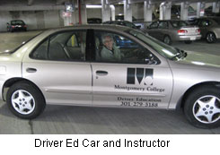

|
|
Driver Safety/ Driver Education
Driver Education tentative Schedule (for planning purposes)
Driver Education Schedule of Classes now open for registration
Driver Education FAQs
Behind the Wheel Guidelines
How to Register
Additional Driving Lessons
Maps to Campuses & Public Transportation Options
Maryland Safety Programs
Safety Programs Director
Marcy Jackson
Phone: 240-683-2589
marcy.jackson@montgomerycollege.edu
Montgomery College WD&CE 51 Mannakee Street Rockville, Maryland 20850 Customer Service 301-279-5188 |
Driver Education Program
Tentative Schedule Fall 2006/Spring 2007
Course: SFT001
Driver Education at Montgomery College. This course prepares new student drivers to obtain a Maryland driver's license. It consists of one 3-hour orientation, ten 3-hour classroom sessions, and three 2-hour in-car sessions, total 14 sessions. Students under 18 are required to be accompanied by parent(s) at the orientation session. Most classes are held at the Gaithersburg Business Training Center, see map for directions to GBTC and information on public transportation options. GBTC is located on RIDE ON bus route 55 (stop at Summit Ave., walk 2 blocks toward City Hall/ Gaithersburg MARC train station) or RIDE ON bus route 54 (stop at Diamond Ave. and walk 3/4 mile east, parallel to RR tracks).
The orientation session is designed to help parents and students become acquainted with Montgomery College's driving school policy, overview of Maryland's Graduated Licensing System program, and to learn Behind the Wheel schedules with expectations. We highly recommend that students have a learner's permit for this course so that they may have the opportunity to practice driving with a parent or mentor between sessions. Please bring your learners permit, if you have one, or your birth certificate to the Orientation/first class session. Our Driver Education course meets all MVA requirements. Our experienced instructors are approved and licensed by the MVA. Maximum class size is 22. Disability support services should be requested 3 weeks in advance. Total class time: 33 classroom hours, plus 6 hours Behind The Wheel (BTW) instruction, for a total of 39 hours.
This schedule is provided for planning purposes only. Check our official class schedule for classes that are open for registration. Questions about registration may be addressed to the Customer Service Desk at 301-279-5188. Questions about the Driver Education Program may be addressed to the Safety Programs Director, Marcy Jackson at 240-683-2589 or by email Marcy.Jackson@montgomerycollege.edu
Driver Education, Tentative Schedule
| CRN# | Days | Times | Dates | Sessions* |
|---|---|---|---|---|
28021 |
Monday, Wednesday |
6:30 p.m. to 9:30 p.m. |
10/16/06 to 11/20/06 |
11 classroom, |
35169 |
Saturday, 2 sessions per day, with hour lunch. First day from 9:00 am to 12:15 only, for Orientation. |
9:00 a.m. to 4:00 p.m. |
01/27/07 to 03/03/07 |
11 classroom, |
35665 |
Monday, Wednesday, |
6:00 p.m. to 9:00 p.m. |
03/12/07 to 04/09/07 |
11 classroom, |
35168 |
Monday, Tuesday, Wednesday, Thursday, Friday |
6:00 p.m. to 9:00 p.m. |
04/16/07 to 04/30/07 |
11 classroom, |
45825 |
Tuesday, Thursday |
6:00 p.m. to 9:00 p.m. |
05/03/07 to 06/07/07 |
11 classroom, |
45824 |
Monday, Wednesday, Friday |
6:00 p.m. to 9:00 p.m. |
05/30/07 to 06/22/07 |
11 classroom, |
*We try our best to conclude BTW session by course end, although we cannot guarantee it. BTW sessions are scheduled throughout the week, not necessarily the same day or time as the classroom sessions.
Driver Education, Schedule of Classes, that are currently open for registration.
 Driver Improvement Lessons
Montgomery College's Workforce Development and Continuing Education is now offering Driver Improvement Lessons in increments of 2, 4, or 6 hours for individuals needing more driving practice or a refresher after a few years. The Driver Improvement lessons cost $100.00, $200.00 or $300.00 respectively. In addition, we offer the MVA 6-hour Behind the Wheel course separately for students who have completed the classroom portion of Driver Education at another school. The MVA 6 hour Behind the Wheel course costs $225.00. Out of state fees apply; No tuition waivers. To register, call the program director; Marcy Jackson at 240-683-2589, for scheduling and appropriate CRN number for registration. Application Form for Additional Driving Lessons.
Page last updated January 11, 2007